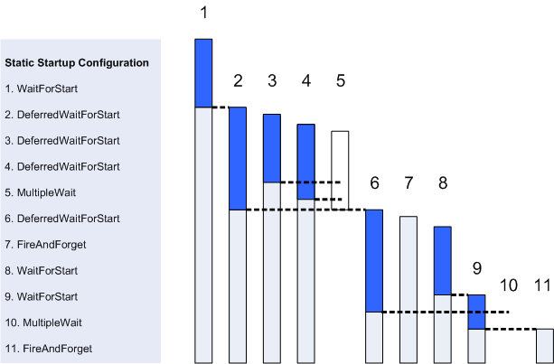

The System Starter is invoked by the Base Starter as part of the boot process once the file system has been mounted. It works by processing a list of instructions in sequence. The list is referred to as a Static Startup Configuration, or SSC. In practical terms the SSC is defined in a resource file and is built into the ROM.
A fundamental feature of the SSC is that it allows the start up procedure to be optimised. Though the commands are processed in sequence their effect is to perform tasks not only in sequence (wait for the application or process to initialise before continuing) but also in parallel (do not wait for initialisation) and at the optimum time (wait until conditions are right).
In the diagram above each vertical bar represents a process or application started during the startup procedure. The list on the left shows the SSC command for each process. An application may ‘rendezvous’ with the starter when its initialisation (shown in dark blue) is complete and it is ready to be used by dependent applications. A rendezvous is simply a signal from the appliation to the starter that it has reached a designated point.
Copyright ©2010 Nokia Corporation and/or its subsidiary(-ies).
All rights
reserved. Unless otherwise stated, these materials are provided under the terms of the Eclipse Public License
v1.0.